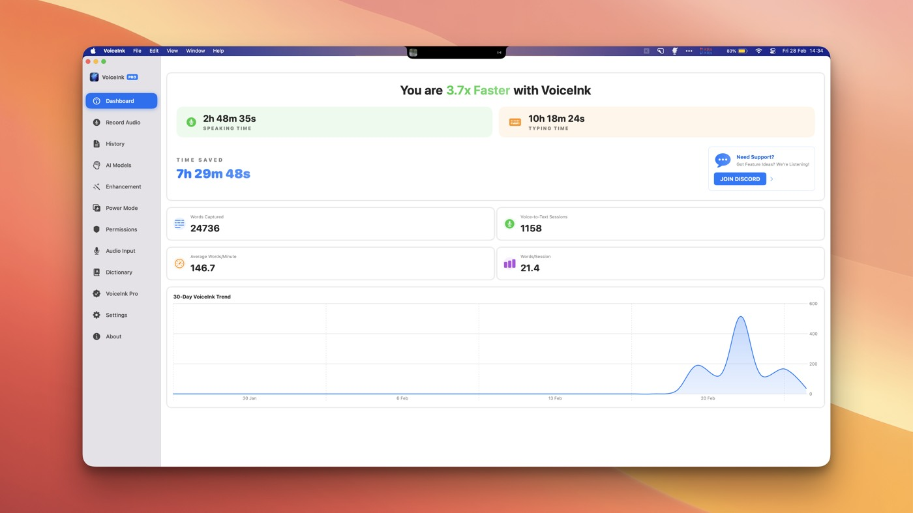
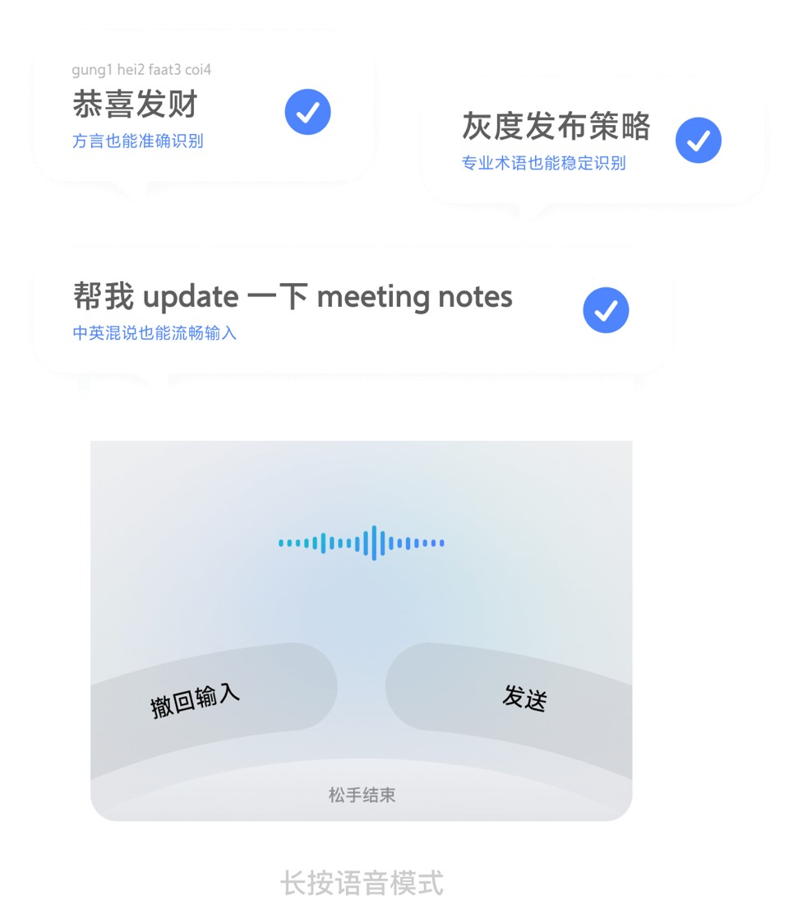
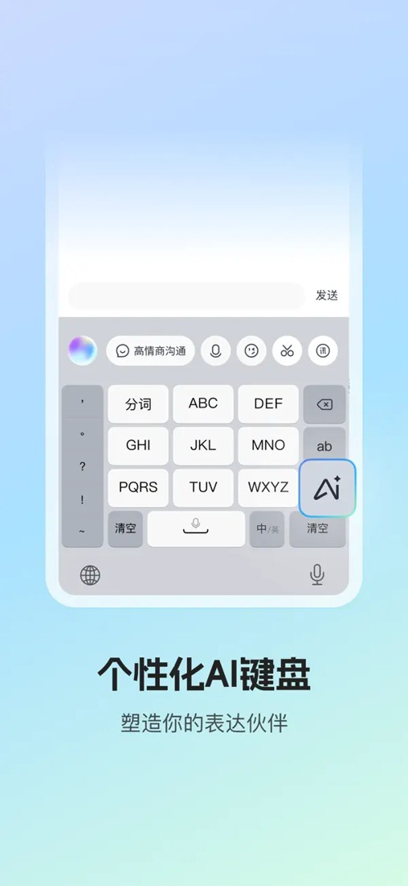
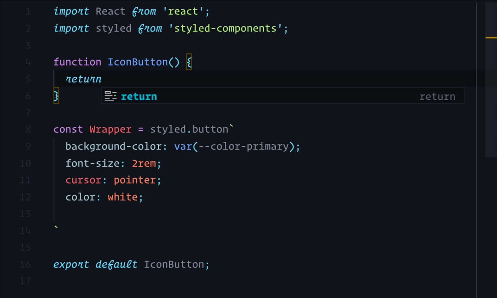

语音输入与Agent输入：10产品真实工作流
从听写、清理、应用上下文与选区编辑，到真正的命令出口：10个产品、实际使用者、递送与纠错问题，及硬件是否值得增加的证据。

核验日期：2026-10-06。范围：10 个有区别的产品/工作流，不是下载排行榜。公开网页、官方文档、发行说明、个人长用报告与问题记录；没有安装或亲测这些应用，也没有访问私人账号。
结论先行
- 语音已有效替代“长段文字的产生”，尚未替代“选对目标、补上下文、审阅结果、批准行动”。 主流用户路径仍是聚焦某个输入框→说话→自动清理→检查→发送。把这条路径称作“语音 Agent”会混淆责任边界。
- 最值得做的硬件不是再造一个通用录音按钮。 Fn、鼠标侧键、手机空格长按、双击免按住已经覆盖触发。机会是显示当前任务/目标应用/录音状态，用不同动作区分“记下来、改这段、发给这个 Agent、确认执行”，并有明确撤销。
- 手机是强替代物，而不只是麦克风。 咕咚实际在手机说稿、电脑编辑；选择微信输入法而不是豆包的关键是跨设备粘贴。多一块硬件若没有更好的任务路由、可审阅交付与可靠连接，反而多一个充电/配对/状态管理负担。个案
- “本地”“AI”“Agent”都必须分层。 本地 ASR 后接云端清理、词典自动学习或 shell 中的云 API，依然会出网。Aqua MCP 是 Agent 访问语音历史/设置；VoiceInk Custom Command 是用户配置的本地执行出口；两者都不等于应用自己会安全自主执行一切。
- 主要风险不只是错字，而是错误被“合理化”。 例如把要发给编程 Agent 的“delete...”变成当场删掉口述段落，或清理模型开始回答问题而不是转写。控制面需要明确“逐字/清理/编辑/执行”状态。
证据口径与限制
- A：官方文档/源码/发行记录，证明能力与边界，不证明好用或用户占比
- B：具名作者、公开原始视频或带环境的 issue，证明此工作流有人实际做过
- C：匿名评论/商店评论，作为问题线索；身份与商业关系通常不可确认
- D：厂商案例、带推荐码长用报告或竞品撰写评测，明确利益关系；可以提取操作流程，不能当独立质量结论
- 本报告不从样本外推职业、年龄、地区或市场份额，也不把星数/评分数等同活跃语音用户。强案例集中于开发/写作；外勤、仓储、维修等现场职业缺少此样本的直接证据，应列为访谈假设
- 旧用户报告用于解释摩擦机制，不能声称旧 bug 在 2026-10-06 仍存在；尤其 iOS 免跳转和产品平台覆盖变化很快
- 搜索中发现同文多帖、推荐码、竞品 SEO 评测，以及冒充官方的中文下载域名。能力只采用已核验官方域名/商店开发者；不采用所谓“99%/4 倍/零编辑”作为跨产品实测结论
一、能力分层：不要把所有自然语音都叫 Agent
| 层级 | 输入/结果 | 核心风险 | 产品例子 |
|---|---|---|---|
| L1 听写/STT | 声音→文字 | 漏首词、方言、数字、路径、噪声 | 所有产品都有；Talon 的 dictation 与 commands 可区分 |
| L2 清理/改写 | 去口水词、加标点、结构化 | 删掉真实意思、误翻译、主动回答 | Flow、Aqua、Willow、Superwhisper、VoiceInk、豆包、微信 |
| L3 应用上下文写作 | 读取应用/光标附近/选区/剪贴板/屏幕文本再写 | 误读上下文、隐私暴露、模式误匹配 | Flow、Superwhisper、VoiceInk、Aqua、Willow；范围不同 |
| L4 选区编辑 | “把这段改短”→替换指定文本 | 选错对象、破坏原文、撤销不清楚 | Flow 桌面 Command Mode；Superwhisper Custom；VoiceInk Rewrite；Aqua edit API |
| L5 结构命令/工具动作 | 明确脚本、API、快捷键或命令语法产生副作用 | 错目标、误执行、权限和不可逆性 | Talon 命令/Python；VoiceInk Custom Command；Aqua MCP 是 Agent 调用语音数据，不是任意执行器 |
L3 不是 L5。输入框里出现“帮我发邮件”不代表输入法发了邮件；大模型给出答案也不等于调用了邮件工具。以下每项都标出原生能力和外接能力。
二、10 个代表性产品：每个都有可复核的 3–5 步流程和实图/视频
1. Wispr Flow：把开发者的长提示词送入现有 IDE/Agent
原生能力：跨应用听写、自动格式；开发者页明确列出术语、camelCase/snake_case 与 Cursor/Windsurf 文件标记。桌面 Command Mode 可选区编辑、起草与搜索；2026-10-03 文档明确 iOS 原位文本编辑目前不可用，不能把桌面功能直接外推到移动端。开发者页 / Command Mode
典型操作：①把光标放在 Claude Code/IDE 提示框；②按住快捷键或使用锁定录音；③说任务背景、限制与预期结果；④释放后检查清理后的提示，补文件/符号；⑤在目标 Agent 内提交并审阅执行结果。若选区编辑，则先选文本、用专门 Command Mode 键，再审阅替换。
真实使用：The Marketing Show 2026-02-02 自述连续约三个月每日使用，主要是 Claude Code，也写评论、提交说明、邮件；使用 Option 切换免按住，手仍在键盘方便修改。作者明确有推荐奖励与 affiliate，故属于 D 类，字数/速度只作个人仪表盘自述。其负面是手机权限/按钮位置与桌面无实时文字反馈；并指出共享空间不适合。长用报告
关键边界：它把提示词交给 Claude，Claude 才执行开发任务。已核验的 Flow Notetaker MCP 可向其他 AI 开放会议笔记，这与“任意应用里直接代办”仍不同。定价与 MCP 边界
媒体：官方开发者页的 Tech With Tim 实际操作视频，展示给 IDE 提示和文件上下文；不是 logo。视频；官网另有 iOS 文档内容示意图，但不是完整录音操作 UI，不用它证明输入交互。
2. Superwhisper：用户自己规定“每个应用、每种文本该怎么处理”
原生能力：语音模型与清理语言模型分别选择；Custom Mode 可选择 Application、Copied text、Selected text 三种上下文，按应用/网站触发。官方源码文档说明空白自定义指令可能导致意外结果。Custom Mode 官方源码 / 模型
操作：①给“邮件回复”模式写明只输出回复文本；②开启需要的选区/应用上下文并选本地或云模型；③在邮件中选原文，按该模式快捷键；④口述要点；⑤校验结果和人名后在原应用发送。属于用户配置的文本流水线，不是已验证的自主邮箱工具。
真实摩擦：alexd231232 在 r/superwhisper 的约 2026-08 帖子报告，模型开始回答所说的 prompt，而不是把它打出来；有用户回应类似经历，Nico4Real 自述团队正在改进并建议不同 mode/model。身份以公开用户名计，未独立认证团队身份。原帖
硬件启示：模式是比“录音开关”更重要的状态。快捷按钮如果只发 Fn 而不显示模式，不能解决用户把“转写”误用成“回答”的问题。
实图：已下载、查看 superwhisper-context.png，可清楚看到 Selected text 勾选、语音模型和语言模型两个下拉框，以及模式快捷键入口。
官方Custom Mode配置：选区上下文、语音模型与语言模型分别设置。 图源.
3. VoiceInk：可审计的本地输入层，并提供真正的可配置执行出口
原生能力：Modes 管理转写、清理、上下文及 Paste/Respond/Custom Command 输出。屏幕上下文先在本地 OCR，再把提取文字交给所选增强提供者；本地转写不保证后续增强或词典学习也在本地。Modes / 上下文 / 隐私
操作：①配置“项目日志”Mode，选择转写与增强策略；②为它选择 Custom Command 输出；③按专用键说调试观察；④VoiceInk 把最终文字经 stdin/VOICEINK_TRANSCRIPT 传入本地命令；⑤外接脚本追加 Markdown 或调用用户自己的接口。这是真正的原生 hook、用户 DIY 动作，不是内建通用 Agent。官方限制：非交互命令、10 秒超时，stdout 不自动回贴；没有直接成功/失败提示，需要日志。Custom Commands
真实摩擦：mneuschaefer 的 issue #687（2026-05-06；1.74/M1/Parakeet V3、AI 增强关闭）提供日志，展示热键录音有时为空或只剩片段；问题当前 Closed，不作为仍未解决的缺陷。#257 请求 History 显示生效 Power Mode，揭示“我不知道刚才用了哪个模式”的调试需求。#687 / #257
补充官方故障边界：History 有文本却未进入目标应用，属于焦点/权限/粘贴递送，而不是 ASR 失败。Clipboard Issues
实图：已检查仓库的 voiceink-ui.png：History、Enhancement、Power Mode、Permissions、Dictionary 等控制区和统计仪表盘。是历史 UI，图上速度数值不是我们的效能测量；当前术语已改为 Modes。

VoiceInk历史界面：History、AI Models、Enhancement、Power Mode与Dictionary；统计数字不是本研究测量。 图源.
4. Aqua Voice：文本上下文与外部 Agent 可调用的语音历史
原生能力：按目标应用格式化，Dictionary/Custom Instructions/Deep Context；API 的 operation=edit 接受选中文字和语音指令。MCP 可读历史、读 transcript、管理词典/设置与反馈。MCP 方向是 Claude→Aqua；“file it as a Linear ticket”示例中的 Linear 动作仍需 Claude 的其他工具。FAQ / API / MCP
操作：①在目标输入框激活听写；②口述内容并使用词典/上下文；③停止、审阅、插入；④若要复用旧 brainstorm，在已授权的 Agent 中搜索 Aqua 历史；⑤Agent 生成建议或经另行授权的工具处理。录音零保留时不能假定之后仍有可检索历史。
真实使用：Ben Lovejoy（9to5Mac，2025-08-15）自述两周近两万词，写文章与短消息；同段朗读的单人对比有较好结果，但仍把一个短语改成近义表达，不能外推总体准确率。Colin Hughes（2025-08-27，公开无障碍技术倡导者/前 BBC 制作人）用 KeyboardMike，认可词典与写作适配，但指出按键触发/粘贴不是全免手，背景电视或旁人可能被一并转写；用 Apple Voice Control 发 Tab 的 DIY workaround 又会把命令口令录进文字。均是当时版本的历史实测。Lovejoy / Hughes
媒体：Hughes 的 Word + Aqua 浮动听写框真实截图；官方 Aqua Voice 2 UI 视频。实测截图 / 视频。官网 hero 视频仅抽象背景，已排除，不可拿来当产品界面。
5. Willow：降低配置负担的上下文邮件/消息写作
原生能力：官方流程要求先聚焦文本框，再按住 Fn；松开后格式化并插入；双击免按住。可用周边文字补人名和邮件格式。官方隐私页说明云处理，默认 Private Mode 不是完全离线；关闭 Context Awareness 后不读取屏幕文字。操作指南 / 隐私
操作：①打开 Gmail/Slack 并点中输入框；②按住 Fn 或双击；③说粗略内容；④结束后检查称呼、语气、正文；⑤手动发送。未验证通用执行 API，不赋予 L5 能力。
真实摩擦：Fragrant_Raisin_Face（约 2026-06）既喜欢自定义词与同步，又报告自己口述“delete”作为发给别处的编辑指令时，Willow 直接改写了整个段落。此帖只能说明该用户经历，不能据此判定所有版本无法关闭清理；评论中关于隐私的猜测也不能替代官方策略。原帖
实图：官方 Gmail 听写 GIF 已下载，检查到输入框、工具栏和底部录音胶囊。willow-demo.gif / willow-demo-frame.png。
Willow官方Gmail演示帧：输入框与录音状态；原演示另附短片。 图源.
6. 豆包输入法：中文、方言与移动“按住说、松手结束”的原生键盘流
核验能力：官网支持方言/专业术语/中英混输，并以轻声、嘈杂输入与长文整理为产品方向。App Store 列出点按/长按、语音待机与免跳转、可一键发送；不是“豆包 App 的工具调用”自动继承给输入法。官网 / 官方 iOS 商店页
操作：①在聊天/笔记/AI 提示框换到豆包键盘；②按住空格/语音入口开始；③用中文或混合术语说一段；④松手后检查、需要时整理；⑤在原应用发送或复制到电脑。官网示意明确同时展示“撤回输入”“发送”“松手结束”，这比只有录音光环的设计更有可控性。
真实使用/局限：咕咚 2026-01-29 用了一周，文章草稿本身用豆包听写，认为识别很好；但其当时手机稿→电脑编辑要经微信传输助手/飞书，多一步让他换回微信。不能把 1 月“没有 PC/跨设备剪贴板”当成 10 月现状；当前官网已经有桌面入口。个案
实图：已下载检查 doubao-ui.png：语音波形、撤回、发送、松手结束以及中英混输/专业词演示。它是官方界面示意，非我们实测识别结果。

豆包输入法官方界面示意：撤回、发送、松手结束；不是本次识别实测。 图源.
7. 微信输入法：语音只是入口，跨设备递送才决定是否留下
核验能力：官方 iOS 商店页当前说明 STT、问 AI（DeepSeek/Hunyuan）、快捷文字与剪贴板；发行记录可确认文字整理、悬浮窗免跳转、离线语音、去口水词/分段/长内容分点。问 AI 属于输入面板内问答和生成，不能据此称其能操作其他应用。官方商店页
实际流程（B 类）：①咕咚在手机用语音写稿；②手机复制结果；③电脑 Ctrl+V 进编辑器；④在大屏排版修改；⑤再发布。2026-02-11 他又实际使用 Mac Fn 语音录整篇文章，认为免费入口已满足需求，当时快捷键不能自定义。此限制不未经验证外推至当前。跨设备个案 / Mac 使用
对手机输入设备的意义：“远程语音输入”可以先成为草稿/剪贴板，而不必直接控制远端 Agent；目标是降低传输和找位置的成本。进一步直发 Agent 前，仍需显式任务身份和确认。
媒体：商店键盘 UI 已下载；咕咚 1 月文章中的 PC 按键语音图经目视复核，文字为“授权微信控制你的电脑（仅用于粘贴文本）”，存在微信 App 与微信输入法身份含混，故不拿该图独立证明输入法能力；主展示采用官方商店键盘界面。官方主页本次返回 Site Unavailable，未用疑似镜像下载站代替。
腾讯官方商店的微信输入法键盘图；不使用身份含混的PC微信图证明输入法能力。 图源.
8. 讯飞输入法：把 AI 表达/问答工具放入键盘技能组
核验能力：官方商店开发者为科大讯飞；描述 AI 键盘、可排序技能组、聊天润色/回复/文案/问答、AI 剪贴板和翻译。注意“智能体”是键盘能力入口描述，不是已证明的第三方执行 API；iOS 页明确没有“光标搭子”，不能混用安卓宣传。官方商店页
操作：①在目标聊天/工作文本框打开键盘；②用语音产出初稿；③按键盘中已配置的润色/智能回复工具；④选择合适输出并检查；⑤回到原目标发送。技能组配置是原生 UI；对邮箱、日程或 Agent 的自动执行未验证。
真实摩擦：商店用户“浣若”（显示 7 月 31 日，年份未单独显示）报告语音需跳去输入法再返回；当前 release history 已有 6 月悬浮窗免跳转与 9 月减少跳转，不能把旧评价当现有所有用户必经步骤。这里更重要的是跨应用麦克风权限与恢复焦点的普遍设计问题。
实图：xunfei-ui.webp 已检查，能看到九宫格键盘、麦克风、“高情商沟通”技能按钮与 AI 入口。

科大讯飞官方商店AI键盘图：语音与技能入口；平台差异见正文。 图源.
9. Talon（可配 Cursorless）：真正的语音命令与精确编辑，而不是只给 LLM 口述
原生能力：命令语法、Python 扩展、语音/眼动/口部声响输入；2026-09-20 Talon 1.0 发布新命令与听写模型、mixed mode、标号/选区/纠错/鼠标网格等 UI。官方旧 Getting Started 仍带“先加脚本”的说明，与新 1.0 默认命令集存在时效差异，配置时应看版本。发行说明 / 官方说明
操作：①进入编辑器和相应语言上下文；②说变量/代码结构命令；③用目标标记或选择命令定位；④执行替换/删除/撤销；⑤继续键盘不可用时的导航。Cursorless 是额外的编辑器/社区集成，不是 Talon 自动附带的 LLM Agent。社区代码编辑说明
真实使用：Josh W. Comeau 2020 原文、2025-02 更新，公开演示用 Talon 写 React 组件、选择错误单词并纠正，搭配眼动与口部点击。此处只采用作者公开展示的“减少手部输入”工作需求，不推断其他人的健康状况。直接语音编码强调目标选择和可预测命令，学习成本明显高于口述提示词。第一手视频与流程
实图：已下载、检查 talon-coding.jpg，是上述实操视频 20 秒帧，编辑器正建立 React IconButton；不是生成的示意图。

Josh W. Comeau公开Talon编码演示的20秒帧；原文2020年、2025年更新。 图源.
10. Whispering / Epicenter：开源、自己选模型的提示词输入层
核验能力：当前官方仓库 apps/whispering README 明确录音→选提供者转写→可选清理→递送；Epicenter 桌面宿主提供全局键、本地模型、系统粘贴，浏览器版本只有页面内快捷键和剪贴板后备。README 对浏览器“真实产品目标”和末段“不再 hosted deploy”有相互矛盾的迁移说明，故只将桌面路线列为当前可依赖的设计，不推荐把网页现状当稳定承诺。当前官方 README
流程：①配置提供者/本地模型与快捷键；②聚焦 Claude Code 提示框；③说任务；④转写或变换后粘贴；⑤用户提交给 Claude Code。语音 app 不承担代码执行；BYOK/服务费用和密钥配置是额外门槛。
真实演示证据：项目早期 README（当前 fork 保留）链接作者 Braden Wong 的 5 分钟设置视频和 3 分钟 Claude Code 用法，作者自述日用与低 API 花费有开发者推广偏差，不做价格承诺。当前主仓库迁移后不能机械沿用旧安装步骤。历史 README / 操作演示 / Claude Code 短片
媒体：以上两段公开视频有实际录音/设置/代码提示流；未下载视频，不把缩略图或品牌 logo 当使用证明。
三、真实使用者与任务，而不是虚构“人群画像”
| 公开使用者/材料 | 已证实任务 | 输入手段与后续动作 | 观察边界 |
|---|---|---|---|
| The Marketing Show，2026-02-02 | Claude Code prompts、提交说明、邮件/Slack | Option 切换听写；键盘仍用于立刻纠正；手机体验不喜欢 | 有推荐返利；个人统计不能外推 |
| Ben Lovejoy，2025-08-15 | 新闻文章、日常消息 | Aqua/内建麦克风，停止后形成文章段落 | 具名记者两周经历；单段比较不是通用基准 |
| Colin Hughes，2025-08-27 | 文本创作、减少手操作 | Aqua + 外接麦；Voice Control command-only 接 Tab | 非全免手；背景人声与口令污染 |
| 咕咚，2026-01/02 | 手机稿→电脑编辑、AI 对话、开发者写作 | 豆包/微信语音；跨设备 Ctrl+V；之后 Mac Fn | 同一人比较不是群体偏好；免费产品是强替代 |
| Josh W. Comeau，2020/2025 | 真实 React 代码与桌面导航 | Talon 命令、选区、纠错、眼动 | 精确命令范式，不能等同新用户即用 |
| mneuschaefer，2026-05-06 | 日常热键转写 | VoiceInk M1/Parakeet，提供启动竞态日志 | Closed 的历史 issue，不能当当前复现 |
| Fragrant_Raisin_Face，约 2026-06 | 给别处文本编辑的指令输入 | Willow 口述包含 delete 的内容 | 误把内容当控制；匿名单例 |
| alexd231232，约 2026-08 | 口述 prompt | Superwhisper mode 自行回答 | 模式/LLM误行为线索，匿名单例 |
现场移动工作目前没有足够具名样本，不应写“销售/医生/维修普遍使用”。可以设计下一轮访谈：在走动、双手占用、弱网、多人环境中，任务究竟是记一条草稿还是立即触发有后果的系统操作？两者需要不同设备与授权。
四、反复出现的摩擦与设计优先级
评级是本研究的定性判断，不是统计分数。重复度只表示跨来源/跨产品出现。
| 优先级 | 问题 | 严重度 | 样本中的重复性/证据 | 建议 |
|---|---|---|---|---|
| P0 | 文字/编辑命令/执行命令混淆 | 高，可改变原意或触发错误动作 | Willow delete；Superwhisper 回答 prompt；Talon 模式区分 | 明确模式、保留原文、可撤销；执行动作另开确认 |
| P0 | 目标应用/任务不明确、焦点丢失 | 高，发错位置会泄漏或污染任务 | VoiceInk 官方 paste 排障；Flow 无焦点仅通知；手机跨端流程 | 录音时冻结目标身份，输出前显示应用/任务名；不靠“当前焦点”猜远端 |
| P0 | 收到了声音但没成功递送 | 高，丢思路与重复劳动 | VoiceInk #687 日志；iOS 用户跳转/丢文字 | 分清 listening/processing/delivered；保留恢复稿；失败不静默 |
| P1 | 中文/中英专业术语、路径、变量、标点 | 中到高，代码参数可能完全失效 | Flow 官方术语词典；Aqua 单人语义替换；Willow 测试 technical identifiers | 保留逐字模式、词典、选区上下文；路径/命令建议手动或选取 |
| P1 | 云/本地的错误安全感 | 高于普通 UX，涉及私密上下文 | VoiceInk 三层处理官方说明；Superwhisper 双模型；Willow 云 Private Mode | 按步骤显示数据去向，不用单一“本地”标签 |
| P1 | 手机→电脑交付 | 中，高频写作者会影响产品选择 | 咕咚跨设备明确换回微信 | 优先路由/剪贴板/任务收件箱，再考虑硬件 |
| P1 | 共享空间、人声、低声/噪声 | 中，限制能否使用 | Hughes 背景声；Flow 长用者共享空间边界；中文官方优化方向 | 近讲/定向输入、录音可见性、静默备选，不承诺万能降噪 |
| P2 | 成本、模型/权限配置 | 中，决定是否长期留用 | 免费微信；开源 BYOK；订阅与模式管理 | 不要把价格差异误当质量差异；总成本含配置/纠正时间 |
| 待验证 | 旋钮选任务、实体 yes/no 是否高频 | 未知 | 本次语音样本没有直接需求量证据 | 只在真实多 Agent 排队/审批流测试，不用语音产品热度证明 |
纠错原则：语音“撤销”必须知道撤哪一次事务。删除最后一个识别词、撤销选区改写、取消尚未发送的 prompt、撤回外部邮件是四种不同操作。Flow 取消录音并不等于撤回已发送消息；VoiceInk Shell 的副作用不会因撤销粘贴而自动回滚。
五、实体 PTT、yes/no、task dial 与手机的取舍
哪些已被软件/手机充分覆盖
- 单应用、安静环境、长段自然语言：Fn/PTT/鼠标侧键足够；专用语音键主要是可触摸性、触发姿势或低手部负担价值，不能以“新能力”定价
- 手机上写短消息或草稿：现成键盘的长按/免跳转/撤回/发送已完整；无需另买采集设备
- 需要长上下文的 AI 提示：语音能先降低组织/输入成本，但仍需文件、选区、截图或项目状态，不能靠话筒解决上下文获取
什么时候实体控制仍可能值钱
- 多个 Agent 同时等待：有名字/颜色/任务摘要的实体选择器，再 PTT 给指定任务；核心是路由身份而不是旋钮本身
- yes/no 高频审批：按钮必须展示具体对象、变更摘要和权限风险，明确“批准本次”而不是盲发 Enter/y。否定、暂停、取消应分开
- 低手部操作需求：脚踏/大按钮可能比组合键有价值，但需与用户实际动作能力配合；不能假定所有无障碍需求都适合脚踏或持续发声
- 离桌捕捉：手机已随身、有屏和触觉；专用设备须证明比手机更低打断、更稳定目标同步，而非仅更好看
最小可验证方案（研究建议，不是已证实市场需求）
先做软件原型：输入前展示“任务 A / 草稿模式 / 本地或云”，一键 PTT，结果进入目标任务收件箱；左右两个明确按钮为“插入草稿”和“放弃”，执行另行确认。再让真实用户比较键盘热键、手机、双键外设、带显示旋钮。主要指标：正确目标首次交付率、从意图到可接受结果的总时间、需回看/重说/手改次数、错误后恢复时间、未经意图的动作数。不要只量转写 WPM。
六、成本与隐私概况（时间敏感，非购买建议）
- Flow 官方当前 Pro 为 $15/月或 $144/年；免费有用量限制。上下文发送范围含应用、光标/选区/屏幕文本，需查看平台差异。价格 / 上下文
- Superwhisper 官网 Pro 月价 $8.49；Whisper 本地模型有免费路径。语音模型与语言模型要分别检查；不能因为前者本地就称整条链本地。官网 / 模型
- VoiceInk 开源可自行构建，成品为许可证模式；第三方价格/最低 OS 已存在冲突，本报告不固定引用旧 19/25/$40 数字。当前 README macOS 15+；以当前官方购买页为准。仓库
- Aqua 官方页面显示免费 1,000 字与 Pro/Max 等层级；月/年切换容易导致摘要价误读，不把展示的 $8 自动当逐月结账价。API 单独按量，官方 reference 当前列出 dictation $0.49/小时、transcription $0.39/小时，最短计费 10 秒；这不是消费订阅价。API 账单说明
- Willow 官方隐私资料确认云处理，不把评测所谓“Pro 本地模式”当已证实功能。商店/官网套餐随时间变动；此报告不依第三方价格承诺购买成本
- 豆包/微信商店当前免费；讯飞免费含内购，其装扮/助手收费不等于基础听写费用
- Talon / Whispering 的软件成本不能抵消学习、配置、设备、模型/API 费用；公开个人账单不能外推
七、重要未解问题
- 中文精准选区编辑与复杂中英路径名，在相同声音/任务下的端到端成功率，尚未做对照测试
- 手机送远端 Agent 是否真的比现有复制粘贴/官方移动 Agent 客户端省时，需要可观测任务日志，而不是概念视频
- 有多少人每天遇到多任务路由/审批，不可从少数 GitHub 外设项目或语音应用评论推算
- 需验证具体版本的原文保留、撤销栈、失败恢复、焦点冻结与自动发送；官方营销页往往没有这些信息
- 对外发布所有照片/界面需保留原出处并确认使用权；此目录为研究参考材料，不表示获得转载许可